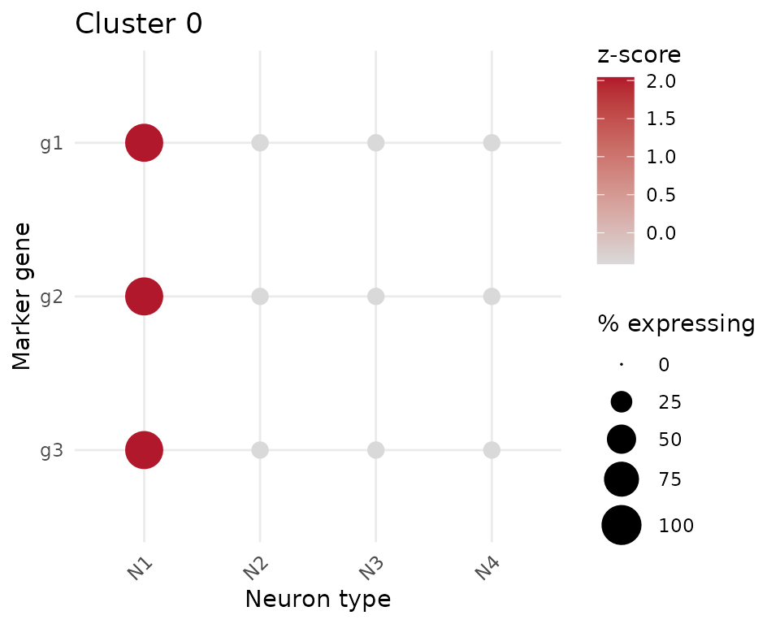

library(cengenAnnotate)
library(dplyr)
#>
#> Attaching package: 'dplyr'
#> The following objects are masked from 'package:stats':
#>
#> filter, lag
#> The following objects are masked from 'package:base':
#>
#> intersect, setdiff, setequal, unionThe workflow this package automates
Manually annotating clusters in a new C. elegans single-cell dataset
usually means: run Seurat::FindAllMarkers(), copy the top
~20 marker genes for a cluster, paste them into the CeNGEN website, and
visually judge whether the resulting dot plot shows one neuron type
standing out. cengenAnnotate computes that judgment
directly from CeNGEN’s reference expression data, so most clusters can
be annotated automatically and only the genuinely ambiguous ones come
back for manual review.
This vignette builds a small synthetic reference dataset so it runs offline and reproducibly. In real use, you’ll fetch reference data from the CeNGEN pins board with [list_cengen_datasets()] and [load_cengen_reference()] instead — see the last section.
1. A CeNGEN reference object
A reference is a long table of gene,
neuron_type, avg_expr (unthresholded average
expression) and pct_expr (percent of cells of that type
expressing the gene) — the same two quantities a CeNGEN dot plot encodes
as color and size.
set.seed(1)
neuron_types <- paste0("N", 1:6)
make_gene <- function(gene, specific_to, base = 0, high = 8, cov_high = 90, cov_low = 15) {
tibble(
gene = gene,
neuron_type = neuron_types,
avg_expr = ifelse(neuron_types == specific_to, high, base),
pct_expr = ifelse(neuron_types == specific_to, cov_high, cov_low)
)
}
reference_data <- bind_rows(
make_gene("g1", "N1"), make_gene("g2", "N1"), make_gene("g3", "N1"),
make_gene("g4", "N2"), make_gene("g5", "N2"),
make_gene("g6", "N3"), make_gene("g7", "N3"), make_gene("g8", "N3")
)
reference <- new_cengen_reference(
reference_data,
meta = list(stage = "demo", sex = "demo", dataset_label = "synthetic demo reference")
)
reference
#> <cengen_reference>
#> stage: demo
#> sex: demo
#> label: synthetic demo reference
#> prepared: ?
#> genes: 8, neuron types: 62. Marker genes from Seurat
prepare_marker_panel() takes raw
Seurat::FindAllMarkers() output and reduces it to the top
marker genes per cluster (default 20; equally weighted, fold-change is
only used to pick which genes make the panel).
markers <- tibble(
cluster = c(rep("0", 3), rep("1", 2), rep("2", 1)),
gene = c("g1", "g2", "g3", "g4", "g5", "g6"),
avg_log2FC = c(2.1, 1.8, 1.5, 1.9, 1.2, 1.0),
p_val_adj = c(0.001, 0.001, 0.001, 0.001, 0.001, 0.001)
)
# cluster "0": three genes specific to N1 -> should be a clear match
# cluster "1": two genes specific to N2 -> also a clear match, fewer genes
# cluster "2": one gene, and we'll require at least 2 usable genes below,
# so it will be sent to review as marker-poor
prepare_marker_panel(markers, top_n = 20)
#> # A tibble: 6 × 5
#> cluster gene rank n_requested n_used
#> <chr> <chr> <int> <dbl> <dbl>
#> 1 0 g1 1 20 3
#> 2 0 g2 2 20 3
#> 3 0 g3 3 20 3
#> 4 1 g4 1 20 2
#> 5 1 g5 2 20 2
#> 6 2 g6 1 20 13. Scoring and classification
score_cengen_clusters() scores every cluster against
every candidate neuron type and classifies each as
"annotate" or in need of review.
result <- score_cengen_clusters(
markers, reference,
min_genes_used = 2 # demo data only has a few genes per cluster
)
result
#> # A tibble: 3 × 11
#> cluster best_neuron_type best_score second_neuron_type second_score gap
#> <chr> <chr> <dbl> <chr> <dbl> <dbl>
#> 1 0 N1 0.892 N2 0.245 0.648
#> 2 1 N2 0.892 N1 0.245 0.648
#> 3 2 N3 0.892 N1 0.245 0.648
#> # ℹ 5 more variables: n_genes_used <int>, n_genes_requested <dbl>,
#> # n_genes_missing_from_reference <int>, n_genes_uninformative <int>,
#> # decision <chr>"annotate" clusters have one neuron type that’s both
well-covered and specific across the marker panel; clusters below the
score/gap cutoffs, or with too few usable marker genes, come back as
"review_ambiguous" /
"review_insufficient_markers" for manual follow-up
instead.
The full cluster x neuron-type matrix (not just the top 2 candidates) is attached to the result:
cengen_matrix(result) |> filter(cluster == "0") |> arrange(desc(score))
#> # A tibble: 6 × 7
#> cluster neuron_type score n_genes_used n_genes_requested
#> <chr> <chr> <dbl> <int> <dbl>
#> 1 0 N1 0.892 3 3
#> 2 0 N2 0.245 3 3
#> 3 0 N3 0.245 3 3
#> 4 0 N4 0.245 3 3
#> 5 0 N5 0.245 3 3
#> 6 0 N6 0.245 3 3
#> # ℹ 2 more variables: n_genes_missing_from_reference <int>,
#> # n_genes_uninformative <int>4. Writing annotations back onto a Seurat object
write_cengen_annotations() is an explicit, opt-in step —
clusters sent to review are never silently annotated.
counts <- matrix(
rpois(6 * 30, lambda = 3),
nrow = 6, ncol = 30,
dimnames = list(paste0("g", 1:6), paste0("cell", 1:30))
)
obj <- SeuratObject::CreateSeuratObject(counts = counts, min.cells = 0, min.features = 0)
#> Warning: Data is of class matrix. Coercing to dgCMatrix.
obj$seurat_clusters <- factor(rep(c("0", "1", "2"), each = 10))
obj <- write_cengen_annotations(obj, result)
table(obj$cengen_annotation, useNA = "ifany")
#>
#> N1 N2 <NA>
#> 10 10 105. QC dot plot
For a visual sanity check (especially useful on
"review_ambiguous" clusters),
plot_cengen_dotplot() reproduces the CeNGEN-style view for
one cluster’s marker panel using the same size/color signals the score
is built from:
plot_cengen_dotplot(reference, markers, cluster = "0", scores = result, top_n_neuron_types = 4)
6. Using real CeNGEN reference data
In real use, discover and load a real dataset from the CeNGEN pins board instead of building a synthetic one (requires network access):
list_cengen_datasets()
#> # A tibble: 4 x 10
#> name stage sex dataset_label ...
#> <chr> <chr> <chr> <chr> ...
#> 1 adult_herm adult hermaphrodite adult hermaphrodite (CeNGEN) ...
#> ...
reference <- load_cengen_reference("adult_herm")
result <- score_cengen_clusters(markers, reference)A note on the default cutoffs
The default cutoff = 0.6 and min_gap = 0.10
are provisional starting points, not empirically derived thresholds.
Before relying on score_cengen_clusters() for unattended
annotation, calibrate them against clusters with independently known
identity and adjust as needed.